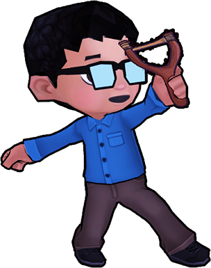
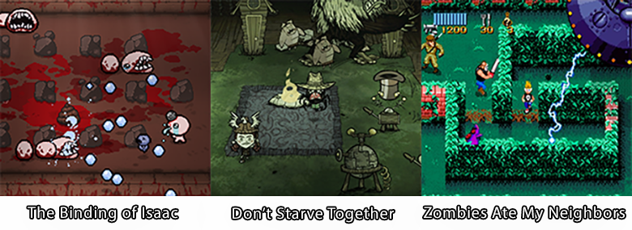
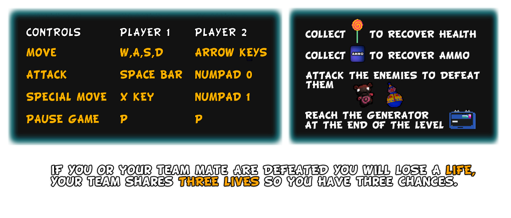
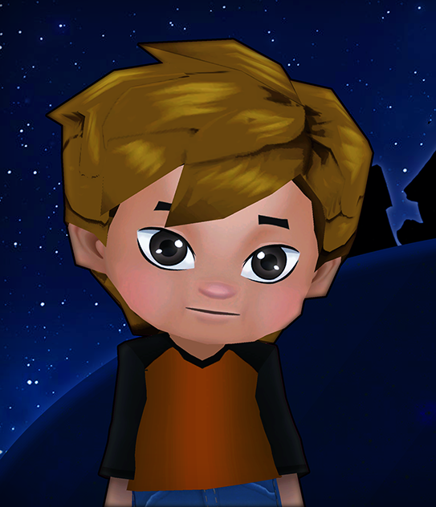
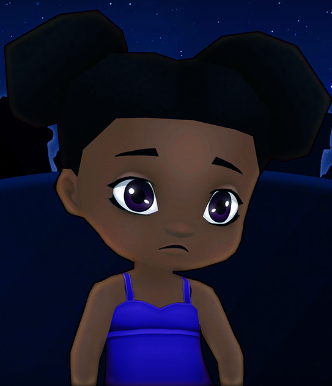
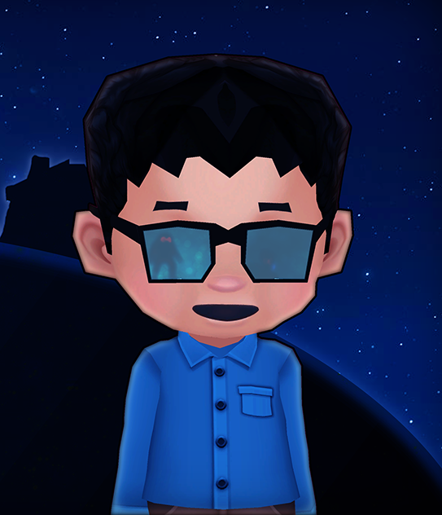
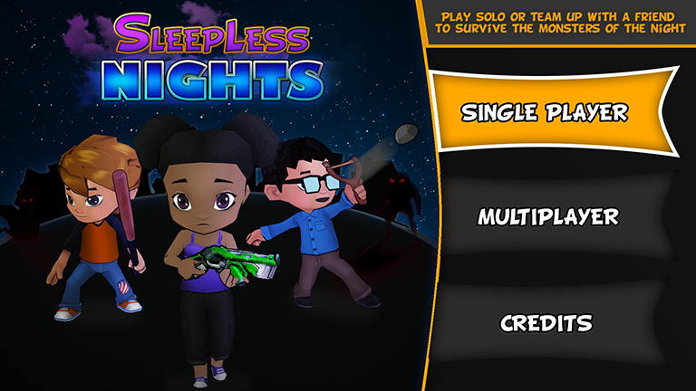
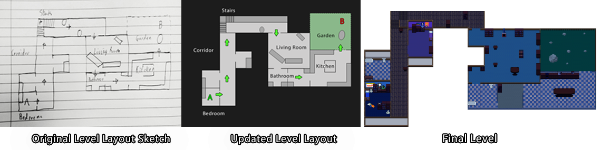
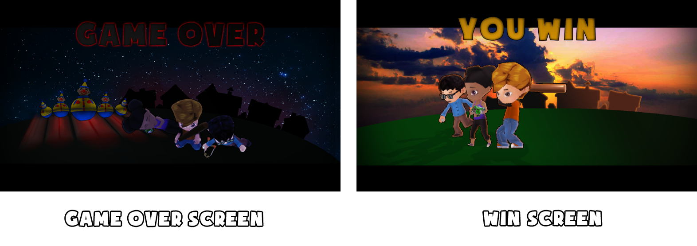

Game Overview
Sleepless Nights is a 2D top-down survival shooter game built for the web using Phaser 3.
The goal of the game is to fight the monsters and reach the generator at the end of the level.
The game can be played alone or with a friend using local multiplayer.
There are three playable characters : Tom, Zoey and Harry.

Game Inspiration
The game draws inspiration from games such as "The Binding of Isaac", "Don't Starve Together" and "Zombies Ate My Neighbors".
These games all feature similar gameplay mechanics and a cartoony visual style

The control scheme of this game has been influenced by The Binding of Isaac; which utilises simple directional controls for moving
and shooting, with dedicated keys for activating abilities or using items.
Player 1 can use the W,A,S,D Keys to move and the spacebar to shoot.
Player 2 can use the arrow keys to move and the numPad 0 button to shoot

The Characters

Tom
Tom is the tough guy of the group. He is a melee character and uses his trusty baseball bat to fend off the attacking monsters.

Zoey
Zoey is a smart and capable young girl. She uses a water pistol weapon to defeat enemies from a safe distance.

Harry
Harry is a boy genius and a master of technology. He builds weapons and gadgetry to defeat the monsters.
User Interface
The user interface of the game includes the main menu, in-game information panels, an options menu and the credits screen. During gameplay,
the status of each player is displayed; this includes a portrait of the character, health and ammo levels.
The main menu provides many options such as starting the game alone or in multiplayer and viewing the game’s credits.

level Design
The level uses a linear topology. The objective is to reach and defeat the final boss (located at point B). The player(s) will start at point A.
The level is designed to represent a large house, with assets and obstacles being in the forms of furniture found within a modern house.

Starting in Harry's bedroom, the player(s) will progress through the house facing basic enemies such as the dangerous clowns and giant monster teddy bears.
Later on, they will navigate down a flight of stairs to a hallway with slightly tougher enemies and obstacles.
The player(s) will eventually find the living room which will be a larger fighting area featuring multiple enemies and larger obstacles and lead towards the final boss.
Added Features
The game changed throughout its development and many new features absent from the design document were added to improve the overall game experience
Team Lives were added - this allows the player multiple attempts at reaching the goal and encourages team play as they share lives.
The story was expanded - this helps to invest the player in the game's world and story and give them a reason to want to progress.
Ammo and Health Pickups - ammo and health pick ups will randomly drop from defeated enemies, making it easier for a player to complete a level
A game over and win screen were added that allows the player to win or lose the game

The game design document has been updated to include more detail on these new features as well as features that did not make it into the final game.
DOWNLOAD GAMES DESIGN DOCUMENT